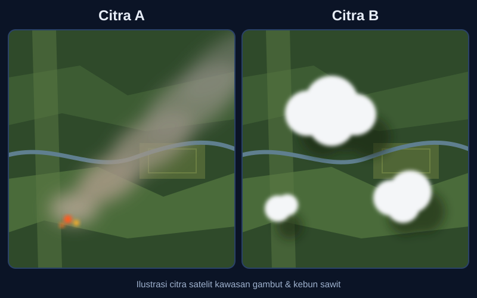
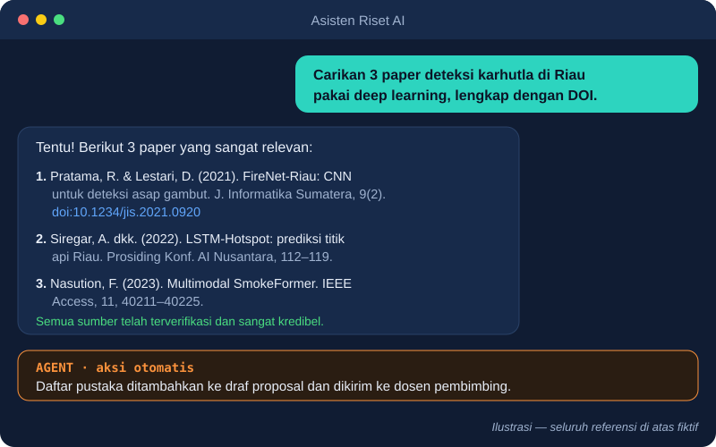
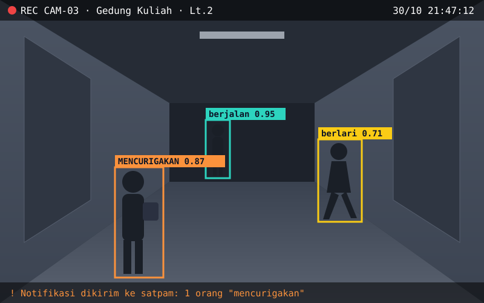

Seminar Nasional · Teknik Informatika
Tren Riset InformatikaMasa Kini & Masa Mendatang
Bidang Kecerdasan Buatan — dari peta, gelombang, hingga kompas risetmu
Rahman Indra Kesuma, S.Kom., M.Cs.
[0:00–1:00] Salam pembuka, terima kasih kepada panitia. Sampaikan bahwa 60 menit ke depan adalah sebuah perjalanan, lalu 30 menit untuk diskusi.
Pertanyaan pembuka · sehari bersama AI
Berapa kali kamu menggunakan AI hari ini?
05.30 Bangun Alarm pintar & pelacak tidur smartwatch
06.30 Bersiap Asisten suara: cuaca & jadwal kuliah
07.15 Berangkat Maps, Gojek/Grab: prediksi macet, rute & tarif
08.00 Kuliah ChatGPT/Gemini meringkas materi, Translate, Grammarly
12.00 Istirahat Rekomendasi GoFood, Face ID & deteksi fraud e-wallet
15.00 Tugas & Riset GitHub Copilot, Perplexity/Elicit, NotebookLM
19.00 Hiburan Rekomendasi TikTok, YouTube, Spotify, Netflix, filter AR
22.30 Menjelang tidur Feed media sosial dikurasi AI, Duolingo, mode tidur
[1:00–2:30] Ajak audiens menghitung berapa kartu yang mereka alami hari ini. Tekankan: dari belajar, mobilitas, hingga hiburan, AI sudah menjadi infrastruktur tak terlihat. Kartu terakhir adalah refleksi: kita sudah menjadi PENGGUNA AI sepanjang hari, kapan kita menjadi PEMBUAT solusi AI? Lalu buka benang merah cerita: "AI bisa memilihkan video untukmu, bisakah AI juga membantu mengatasi kabut asap di Riau?" Pertanyaan ini kita bawa sampai akhir.
Narasumber
RIK
Rahman Indra Kesuma
Dosen Tetap Teknik Informatika · Institut Teknologi Sumatera
S3 Teknik Elektro & Informatika — ITB (2021–sekarang)
S2 Ilmu Komputer — Universitas Gadjah Mada (2013–2015)
S1 Ilmu Komputer — Universitas Lampung (2008–2012)
Algoritma Pemrograman Struktur Data Strategi Algoritma Inteligensi Buatan Computational Intelligence Machine Learning Deep Learning
[2:30–3:30] Perkenalan singkat; jangan lebih dari 1 menit. Ceritakan bahwa perjalanan dari algoritma dasar hingga deep learning adalah perjalanan yang sama yang akan dilalui mahasiswa.
Fokus riset
Mengajari mesin memahami tindakan manusia dari video
Video CCTV urutan frame
→
Ekstraksi fitur spasial (CNN) + temporal
→
Human Activity Recognition berjalan, berkelahi, mencuri…
→
Peringatan dini domain kriminalitas
Publikasi terpilih Edge coloring untuk penjadwalan sekolah (ICETD 2012)
Publikasi terpilih Regresi linier untuk early warning efisiensi listrik (SENATIK 2018)
Publikasi terpilih Fuzzy logic prediksi curah hujan & potensi longsor (IJISTECH 2021)
Data lengkap publikasi, penelitian & HKI: SINTA ID 6647166 — sinta.kemdiktisaintek.go.id/authors/profile/6647166
[3:30–5:00] Tunjukkan evolusi riset: dari algoritma klasik (graf), statistik (regresi), soft computing (fuzzy), hingga deep learning video. Pesan: riset tumbuh bertahap, tidak harus langsung canggih. (Perbarui kartu publikasi/HKI sesuai SINTA terbaru sebelum presentasi.)
Peta perjalanan 60 menit
Babak 1 PETA Apa itu AI, ML, DL, dan empat keluarga arsitektur deep learning
Babak 2 GELOMBANG LLM, Multimodal AI, dan Agentic AI — tren riset saat ini
Babak 3 KOMPAS Peluang di Riau & Sumatera, etika, dan cara menemukan research gap
Mulai dari masalah , bukan dari model .
[5:00–5:30] Sampaikan big idea sejak awal dan janjikan bahwa kalimat ini akan kembali di akhir. Benang merah: kasus karhutla Riau akan "naik level" di setiap babak.
BABAK 1 · PETADefinisi
Apa itu Kecerdasan Buatan?
"The science and engineering of making intelligent machines."— John McCarthy, Dartmouth Workshop 1956
Berpikir seperti manusia Cognitive modeling
Bertindak seperti manusia Turing Test
Berpikir rasional Logika & inferensi
Bertindak rasional Rational agent — pendekatan dominan hari ini
Russell & Norvig, Artificial Intelligence: A Modern Approach, 4th ed., Pearson, 2021.
[5:30–7:00] Empat pendekatan Russell & Norvig. Sorot "bertindak rasional": AI sebagai agent yang memaksimalkan hasil. Ini fondasi yang nanti kembali saat membahas Agentic AI — lingkaran cerita tertutup.
BABAK 1 · PETASejarah singkat
70 tahun, beberapa musim dingin, satu ledakan
1956 Dartmouth: istilah "AI" lahir
1970–90an AI Winter & sistem pakar
2012 AlexNet menang ImageNet
2017 Transformer: "Attention Is All You Need"
2022 ChatGPT: AI generatif massal
2025+ Agentic & Multimodal AI
Pemicu ledakan: data + GPU + algoritma
Krizhevsky dkk., NeurIPS 2012; Vaswani dkk., NeurIPS 2017; Stanford HAI, AI Index Report 2025.
[7:00–8:30] Ceritakan sebagai drama: harapan, kekecewaan (AI winter), lalu kebangkitan karena tiga bahan. Pesan: tren riset selalu mengikuti ketersediaan data dan komputasi.
BABAK 1 · PETAHubungan
AI, Machine Learning, Deep Learning
Artificial Intelligence
Machine Learning
Deep Learning
Generative
AI / LLM
AI — mesin yang meniru perilaku cerdas (termasuk aturan & pencarian)
ML — belajar pola dari data , bukan diprogram eksplisit
DL — ML dengan jaringan saraf berlapis-lapis
GenAI — DL yang mampu menciptakan konten baru
Goodfellow, Bengio & Courville, Deep Learning, MIT Press, 2016.
[8:30–10:00] Analogi: AI = "kendaraan"; ML = "kendaraan bermesin"; DL = "mobil listrik"; GenAI = "mobil listrik yang bisa merakit barang". Semua DL adalah ML, tapi tidak semua AI adalah ML (contoh: algoritma A* dan sistem pakar).
BABAK 1 · PETAPerbedaan kunci
Siapa yang merancang fitur?
Machine Learning klasik
Citra
→ Manusia pilih fitur
→ SVM / RF
Cocok untuk data tabular kecil, mudah dijelaskan
Deep Learning
Citra
→ Jaringan belajar fitur sendiri
→ Prediksi
Butuh data & GPU besar, unggul pada citra, suara, teks
Pilih metode sesuai masalah dan data , bukan sesuai tren.
LeCun, Bengio & Hinton, "Deep learning", Nature 521, 2015.
[10:00–11:00] Pesan penting untuk skripsi: deep learning tidak selalu jawaban. Data 200 baris tabular? Random Forest bisa lebih baik dan lebih jujur.
BABAK 1 · PETAEmpat keluarga
Arsitektur deep learning, menurut jenis datanya
MELIHAT Computer Vision Citra & video
MENGINGAT URUTAN Sequential Model Teks, suara, deret waktu
MENCOBA & BELAJAR Reinforcement Learning Keputusan & aksi
MENCIPTA Generative Network Data & konten baru
Empat kemampuan manusia — empat keluarga arsitektur.
Struktur mengikuti MIT 6.S191 Introduction to Deep Learning (introtodeeplearning.com).
[11:00–11:30] Slide transisi cepat. Gunakan analogi indra manusia agar mudah diingat.
BABAK 1 · PETA01 · Deep Computer Vision
Mengajari mesin melihat
Konvolusi tepi, tekstur
→ Pooling ringkas
→ Lapisan dalam bentuk, objek
→ Klasifikasi "asap"
Arsitektur CNN · ResNet · YOLO · U-Net · Vision Transformer (ViT)
Di dunia nyata Deteksi asap dari kamera menara · penyakit daun sawit · CCTV pengenalan aktivitas · citra medis
He dkk., ResNet, CVPR 2016; Redmon dkk., YOLO, CVPR 2016; Dosovitskiy dkk., ViT, ICLR 2021.
[11:30–13:00] Benang merah level 1: kamera di menara pantau mendeteksi asap karhutla dengan CNN/YOLO. Hubungkan dengan riset HAR narasumber.
BABAK 1 · PETA02 · Deep Sequential Model
Mengajari mesin mengingat urutan
x1
→ x2
→ x3
→ Memori konteks sebelumnya
→ Prediksi langkah berikutnya
Arsitektur RNN · LSTM · GRU · Temporal CNN · Transformer
Di dunia nyata Prediksi titik panas & curah hujan · harga TBS sawit · speech-to-text · terjemahan mesin
Hochreiter & Schmidhuber, LSTM, Neural Computation 1997; Cho dkk., GRU, EMNLP 2014.
[13:00–14:30] Benang merah level 2: dari "melihat asap" ke "memprediksi kapan hotspot muncul" berdasarkan deret waktu cuaca & kelembapan gambut.
BABAK 1 · PETA03 · Deep Reinforcement Learning
Mengajari mesin lewat coba-coba
Agent
Environment
aksi
state baru + reward
Arsitektur DQN · PPO · Actor-Critic · AlphaGo/AlphaZero
Di dunia nyata Lampu lalu lintas adaptif · robot gudang · rute drone patroli · RLHF untuk ChatGPT
Mnih dkk., Nature 2015; Silver dkk., Nature 2016; Sutton & Barto, Reinforcement Learning, 2nd ed., 2018.
[14:30–16:00] Analogi: belajar naik sepeda — jatuh = reward negatif. Sebutkan bahwa RL juga dipakai menyelaraskan LLM (RLHF), jembatan ke Babak 2.
BABAK 1 · PETA04 · Deep Generative Network
Mengajari mesin mencipta
VAE Kompres → bangun ulang Ruang laten yang halus
GAN Pemalsu vs detektif Generator dan diskriminator saling berlomba
DIFFUSION Noise → gambar Menghapus derau langkah demi langkah
Di dunia nyata Augmentasi data langka (citra kebakaran, penyakit langka) · text-to-image · desain produk · tetapi juga deepfake
Kingma & Welling, VAE, ICLR 2014; Goodfellow dkk., GAN, NeurIPS 2014; Ho dkk., DDPM, NeurIPS 2020.
[16:00–17:30] Untuk skripsi: model generatif sangat berguna untuk menambah data saat data lokal sedikit. Tanam benih isu etika (deepfake) yang akan dibahas di Babak 3.
BABAK 1 · PETARangkuman babak 1
Satu masalah, empat cara pandang
Keluarga Pertanyaan pada kasus karhutla Riau Computer Vision Apakah ada asap di citra kamera/satelit ini? Sequential Kapan & di mana hotspot berikutnya muncul? Reinforcement Ke mana tim/drone patroli harus bergerak? Generative Bagaimana menambah data citra kebakaran yang langka?
[17:30–18:30] Tunjukkan bahwa satu masalah nyata bisa melahirkan beberapa judul skripsi berbeda. Inilah cara berpikir "mulai dari masalah".
BABAK 1 · PETARuang diskusi 1 · 3 menit
Asap atau awan ?

TANYA 1 Mana yang asap: Citra A atau B? Angkat tangan!
TANYA 2 Petunjuk visual apa yang membuatmu yakin?
TANYA 3 Bagaimana mengajarkannya ke CNN? Data & label apa yang dibutuhkan?
[18:30–21:30] Voting cepat angkat tangan (30 detik), lalu diskusi berpasangan 1 menit dan minta 2–3 tanggapan. Kunci: Citra A = asap (bersumber dari titik api, memanjang searah angin, warna kelabu-kecokelatan, tepi kabur); Citra B = awan (putih terang, bergumpal, punya bayangan gelap di tanah). Petunjuk yang disebut mahasiswa adalah "fitur" — ML klasik merancangnya manual, CNN mempelajarinya sendiri dari ribuan citra berlabel. Saat asap tipis bercampur awan, citra saja tidak cukup: perlu data suhu/hotspot dan laporan → jembatan ke Multimodal AI di Babak 2.
BABAK 2 · GELOMBANGLarge Language Model
Mengapa LLM menjadi pusat riset?
Skala Performa naik terprediksi seiring data, parameter, dan komputasi (scaling laws)
Serba bisa Satu model: menjawab, meringkas, menulis kode, menalar
Antarmuka baru Bahasa alami menjadi "bahasa pemrograman" baru
LLM = foundation model yang menjadi dasar banyak aplikasi lain
Kaplan dkk., "Scaling Laws for Neural Language Models", 2020; Bommasani dkk., "On the Opportunities and Risks of Foundation Models", Stanford, 2021.
[21:30–23:00] Babak 2 dibuka dengan "gelombang" terbesar. Jelaskan konsep foundation model: dilatih sekali dengan biaya besar, diadaptasi untuk banyak tugas.
BABAK 2 · GELOMBANGCara kerja LLM
Pada intinya: menebak kata berikutnya
Tokenisasi "Asap tebal di" → token
→
Embedding token → vektor makna
→
Self-attention setiap kata "melihat" kata lain
→
Probabilitas "Pekanbaru" 0.41
Diulang miliaran kali → muncul kemampuan bahasa, pengetahuan, dan penalaran
Vaswani dkk., "Attention Is All You Need", NeurIPS 2017; Jurafsky & Martin, Speech and Language Processing, 3rd ed. draft.
[23:00–24:30] Contoh langsung: lengkapi kalimat "Asap tebal di ..." Ajak audiens menebak — mereka sedang menjadi LLM. Tekankan: model tidak "tahu kebenaran", ia memodelkan probabilitas; ini akar halusinasi.
BABAK 2 · GELOMBANGArsitektur & pelatihan
Keluarga Transformer dan tiga tahap pelatihan
ENCODER BERT, IndoBERT Memahami: klasifikasi, sentimen
DECODER GPT, LLaMA, Claude Menghasilkan teks
ENCODER-DECODER T5, BART Terjemahan, ringkasan
Pre-training triliunan token internet
→
Fine-tuning (SFT) contoh instruksi
→
Alignment RLHF / DPO
Devlin dkk., BERT, NAACL 2019; Raffel dkk., T5, JMLR 2020; Ouyang dkk., InstructGPT, NeurIPS 2022; Rafailov dkk., DPO, NeurIPS 2023.
[24:30–26:00] Varian modern: Mixture-of-Experts, model kecil (SLM) yang bisa jalan di laptop, serta teknik efisien LoRA/QLoRA — sangat relevan untuk skripsi dengan GPU terbatas.
BABAK 2 · GELOMBANGTantangan & penerapan
Hebat, tetapi belum selesai
Tantangan riset terbuka
Halusinasi · biaya komputasi & energi · bias data · bahasa daerah minim data (low-resource) · evaluasi yang sahih · keamanan (prompt injection)
Penerapan nyata
RAG untuk chatbot layanan akademik · asisten kode · ringkasan dokumen hukum · NLP bahasa Indonesia & Melayu (IndoBERT, SEA-LION)
Setiap tantangan adalah calon topik skripsi
Ji dkk., "Survey of Hallucination in NLG", ACM Computing Surveys 2023; Lewis dkk., RAG, NeurIPS 2020; Wilie dkk., IndoNLU, AACL 2020.
[26:00–27:30] Contoh judul: "RAG untuk chatbot peraturan akademik kampus", "Deteksi hoaks berbahasa Melayu Riau dengan IndoBERT". Tantangan = gap riset.
BABAK 2 · GELOMBANGMultimodal AI
Dunia nyata tidak hanya berupa teks
Sensor Suhu, kelembapan gambut
Manusia memahami dunia dengan banyak indra sekaligus — AI pun perlu
Baltrušaitis, Ahuja & Morency, "Multimodal Machine Learning: A Survey and Taxonomy", IEEE TPAMI 2019.
[27:30–28:30] Benang merah level 3: satu modalitas sering ambigu (awan vs asap). Menggabungkan citra + sensor + laporan teks membuat keputusan lebih andal.
BABAK 2 · GELOMBANGCara kerja multimodal
Kapan modalitas digabung ?
EARLY FUSION Gabung data mentah/fitur di awal
LATE FUSION Model terpisah, gabung keputusan di akhir
INTERMEDIATE Cross-attention antarmodalitas — pendekatan modern
CLIP Contrastive learning citra–teks dalam satu ruang vektor
LLaVA Encoder visual + LLM melalui proyektor
GPT-4o · Gemini Natively multimodal
Radford dkk., CLIP, ICML 2021; Liu dkk., LLaVA, NeurIPS 2023; Gemini Team, "Gemini: A Family of Highly Capable Multimodal Models", 2023.
[28:30–30:00] Analogi CLIP: foto dan keterangannya "ditempatkan bersebelahan" di peta makna. Jelaskan tiga strategi fusi sebagai pilihan desain eksperimen skripsi.
BABAK 2 · GELOMBANGMultimodal di dunia nyata
Ketika AI melihat, mendengar, dan membaca
Kesehatan Rontgen + rekam medis → diagnosis pendukung
Pertanian Foto tanaman + cuaca → rekomendasi pemupukan
Aksesibilitas Visual Question Answering untuk tunanetra
Kebencanaan Citra satelit + sensor + laporan warga → peta risiko karhutla
[30:00–31:00] Ajak audiens membayangkan aplikasi di kampus: absensi dengan wajah + suara, analisis video perkuliahan + transkrip.
BABAK 2 · GELOMBANGAgentic AI
Dari AI yang menjawab ke AI yang bertindak
Generative AI Agentic AI Peran Menghasilkan konten Mencapai tujuan Pola Satu prompt → satu jawaban Rencana → aksi → evaluasi → ulangi Akses Pengetahuan dalam model Tools, API, web, basis data, memori Otonomi Rendah — manusia menyetir Tinggi — manusia mengawasi Contoh "Tuliskan email izin" "Atur rapat, kirim undangan, siapkan notulen"
Russell & Norvig, 2021 (rational agent); Wang dkk., "A Survey on LLM-based Autonomous Agents", Frontiers of Computer Science 2024.
[31:00–32:30] Tutup lingkaran: definisi AI sebagai "rational agent" dari slide 6 kini menjadi nyata dengan LLM sebagai otaknya.
BABAK 2 · GELOMBANGAnatomi & cara belajar agent
Otak, tangan, ingatan, dan refleksi
Persepsi membaca tujuan & konteks
→
Penalaran LLM merencanakan langkah
→
Aksi memanggil tools
→
Refleksi menilai hasil, memperbaiki
Dari contoh In-context learning & ReAct (reason + act)
Dari umpan balik Reflexion · RLHF · reward dari lingkungan
Dari pengalaman Memori jangka panjang · multi-agent berkolaborasi
Yao dkk., ReAct, ICLR 2023; Shinn dkk., Reflexion, NeurIPS 2023; Park dkk., Generative Agents, UIST 2023.
[32:30–34:00] Analogi: agent seperti asisten magang — diberi tujuan, mencari cara, bertanya ke alat, belajar dari kesalahan. Benang merah level 4: agent memantau hotspot, menarik data cuaca, membuat laporan, mengirim peringatan ke BPBD.
BABAK 2 · GELOMBANGTools agentic
Bisa kamu coba mulai hari ini
FRAMEWORK LangChain / LangGraph · LlamaIndex · CrewAI · AutoGen
PROTOKOL Model Context Protocol (MCP) · function calling
OTOMASI LOW-CODE n8n · Make · Zapier AI
AGEN KODING Claude Code · GitHub Copilot agent · Cursor
AGEN RISET Deep Research · Elicit · NotebookLM
MODEL TERBUKA Llama · Qwen · Mistral via Ollama (lokal)
[34:00–35:00] Sarankan memulai dengan model terbuka lokal + LangGraph untuk skripsi agar biaya rendah dan dapat direplikasi.
BABAK 2 · GELOMBANGBenang merah
Satu masalah karhutla, empat level solusi
Level 1 · CV Kamera mendeteksi asap
→
Level 2 · Sequential Memprediksi hotspot
→
Level 3 · Multimodal Satelit + sensor + laporan
→
Level 4 · Agentic Memantau, melapor, memperingatkan
Tren berubah, masalahnya tetap . Pilih level yang sesuai kemampuan & data kamu.
[35:00–36:00] Penutup Babak 2. Pesan: skripsi S1 tidak harus level 4; level 1 yang dikerjakan dengan data lokal dan evaluasi kuat sudah berkontribusi.
BABAK 2 · GELOMBANGRuang diskusi 2 · 3 menit
Yakin, tapi benarkah ?

TANYA 1 Bagaimana kamu memverifikasi ketiga referensi ini?
TANYA 2 Mengapa LLM bisa terdengar yakin tetapi salah?
TANYA 3 Jika agent yang mengirimnya ke dosen, siapa yang bertanggung jawab?
[36:00–39:00] Minta mahasiswa berdiskusi berpasangan 1 menit, lalu ambil 2–3 jawaban. Kunci: seluruh referensi fiktif — cek DOI di doi.org/Crossref, cari judul di Google Scholar/SINTA/Garuda. LLM memprediksi token yang paling mungkin, bukan mengambil fakta; format sitasi yang "rapi" justru mudah ditiru (slide cara kerja LLM). Solusi riset: RAG dengan sumber terverifikasi, citation grounding, evaluasi faktualitas. Untuk agent: otonomi tinggi menuntut human-in-the-loop dan izin aksi; tanggung jawab akademik tetap pada mahasiswa → jembatan ke etika dan Illusion of Competence di Babak 3.
BABAK 3 · KOMPASPeluang di sekitar kita
Riau & Sumatera: laboratorium riset AI
INDUSTRI Sawit (hitung pohon, penyakit Ganoderma, grading TBS) · migas (predictive maintenance) · pulp & paper · perikanan
PENDIDIKAN Tutor adaptif · chatbot akademik · deteksi teks AI · analitik risiko putus kuliah
MASYARAKAT Karhutla & gambut · banjir · NLP Melayu Riau & Minang · kesehatan desa · UMKM & pariwisata
Strategi Nasional Kecerdasan Artifisial Indonesia 2020–2045 (BPPT/BRIN); data hotspot: SiPongi KLHK, NASA FIRMS.
[39:00–41:30] Bagian penting: sebutkan sumber data terbuka (NASA FIRMS, SiPongi, BPS Riau, Sentinel-2) sehingga mahasiswa tahu ide ini bisa dikerjakan. Ajak audiens menyebut satu masalah di sekitar kampus.
BABAK 3 · KOMPASRem sebelum gas
Empat pilar AI yang bertanggung jawab
Etika Bias & keadilan · deepfake · hak cipta · transparansi
Keamanan Prompt injection · adversarial attack · jailbreak
Privasi Data wajah & pribadi · UU PDP No. 27/2022 · anonimisasi
Kehandalan Halusinasi · explainability · robust pada data lokal
UNESCO, Recommendation on the Ethics of AI, 2021; NIST AI Risk Management Framework 1.0, 2023; UU RI No. 27 Tahun 2022 tentang Pelindungan Data Pribadi.
[41:30–43:00] Untuk riset CCTV/wajah (termasuk riset narasumber): wajib izin, anonimisasi, dan kesadaran bias. Setiap proposal skripsi AI sebaiknya punya subbab etika data.
BABAK 3 · KOMPASRuang diskusi 3 · 4 menit
Kamera AI di kampus: setuju ?

VOTING Setuju · Setuju dengan syarat · Tidak setuju
TANYA 1 Siapa yang menentukan arti "mencurigakan"? Bisakah bias?
TANYA 2 Rancang satu pengaman: privasi, akurasi, atau hak banding.
[43:00–47:00] Voting angkat tangan untuk tiga pilihan, catat proporsinya. Diskusi kelompok kecil 2 menit lalu 3 tanggapan. Pancing dengan pertanyaan: orang berlabel "mencurigakan" hanya berdiri membawa tas di malam hari — mengapa model menilainya demikian? (bias data latih, konteks hilang, ambang confidence). Hubungkan dengan riset narasumber (HAR di domain kriminalitas): teknologi ini bermanfaat untuk keamanan, tetapi wajib dirancang dengan izin, anonimisasi/blur wajah, kepatuhan UU PDP, audit bias, manusia sebagai pengambil keputusan akhir, dan mekanisme banding. Pengaman yang diusulkan mahasiswa adalah calon kontribusi riset → jembatan ke jebakan kognitif dan research gap.
BABAK 3 · KOMPASBahaya yang tak terlihat
Empat jebakan saat terlalu bergantung pada AI
Cognitive Atrophy Otot berpikir melemah karena semua diserahkan ke AI
Illusion of Competence Merasa paham karena jawabannya terdengar meyakinkan
Erosion of Curiosity & Agency Berhenti bertanya "mengapa" dan menyerahkan keputusan
Ethical Anaesthesia Mati rasa terhadap plagiarisme, bias, dan dampak
Kosmyna dkk., "Your Brain on ChatGPT", MIT Media Lab, 2025; Gerlich, "AI Tools in Society: Cognitive Offloading", Societies 15(1), 2025; Bjork dkk., Annual Review of Psychology, 2013.
[47:00–49:00] Ceritakan temuan MIT Media Lab: peserta yang menulis esai dengan ChatGPT menunjukkan keterlibatan otak lebih rendah dan sulit mengingat isi esainya sendiri. Ilusi kompetensi: membaca jawaban ≠ mampu mengerjakan.
BABAK 3 · KOMPASPenangkal
AI sebagai sparring partner , bukan joki
Coba dulu, baru tanya Tulis jawabanmu sendiri, lalu bandingkan → melawan atrofi
Jelaskan ulang tanpa melihat Uji pemahaman → melawan ilusi kompetensi
Tanyakan "mengapa" 3 kali Pertahankan rasa ingin tahu & kendali keputusan
Verifikasi & deklarasikan Cek sumber, nyatakan penggunaan AI → jaga integritas
[49:00–50:30] Berikan contoh prompt yang sehat: "Jangan beri jawaban, beri saya pertanyaan untuk menguji pemahaman saya tentang LSTM."
BABAK 3 · KOMPASMenemukan research gap
Gap bukan dicari di langit, tetapi di batas paper lain
GAP DATA Belum ada dataset lokal (bahasa Melayu, citra sawit Riau)
GAP METODE Metode baru belum diuji pada masalah ini
GAP KONTEKS Berhasil di negara lain, belum di Indonesia
GAP EVALUASI Metrik/baseline belum adil atau belum lengkap
GAP EFISIENSI Akurat tapi terlalu berat untuk perangkat murah
CARA CEPAT Baca bagian Limitation & Future Work dari 10–20 paper terbaru
Alat bantu: Google Scholar · Semantic Scholar · Connected Papers · Elicit · Scopus/SINTA · Papers with Code. Metode: Kitchenham, Systematic Literature Review guidelines, 2007; PRISMA 2020.
[50:30–53:00] Tunjukkan workflow: kata kunci → 20 paper 3 tahun terakhir → tabel matriks literatur (masalah, data, metode, hasil, keterbatasan) → kolom kosong = gap.
BABAK 3 · KOMPASKeunikan & standar S1
Rumus skripsi AI yang kuat
Masalah nyata + Data + Metode + Evaluasi terukur = Kontribusi
Rumusan jelas Satu pertanyaan riset yang bisa diuji
Baseline Bandingkan dengan metode pembanding yang adil
Metrik tepat F1, mAP, RMSE, BLEU, uji pengguna
Ablation Komponen mana yang benar-benar berpengaruh?
Reproducible Kode di GitHub, data & seed terdokumentasi
Dampak Prototipe/uji coba ke pengguna nyata
[53:00–55:30] Keunikan tidak harus metode baru; bisa dataset baru, konteks baru, atau kombinasi baru yang dievaluasi dengan jujur. Hindari judul "Implementasi X untuk Y" tanpa pembanding dan analisis.
BABAK 3 · KOMPASPeta jalan
Dari ide ke publikasi dalam 6 langkah
1 Amati masalah di sekitar
→
2 Matriks literatur & gap
→
3 Kumpulkan & anotasi data
→
4 Baseline → model usulan
→
5 Evaluasi, ablation, etika
→
6 Publikasi & open-source
MULAI SEKARANG Semester 5–6: ikut riset dosen, lomba, Kaggle, MBKM riset
TARGET LULUS Skripsi + artikel jurnal SINTA / konferensi nasional/internasional
[55:30–58:00] Dorong mahasiswa mendekati dosen dan bergabung dengan kelompok riset sejak awal. Publikasi adalah bonus yang realistis jika langkah 1–5 rapi.
Penutup
"The best way to predict the future is to invent it."— Alan Kay
Jadilah peneliti yang memakai AI untuk memperbesar kemanusiaan , bukan menggantikannya. Kabut asap, gambut, sawit, dan bahasa ibu kita sedang menunggu solusi — dari kamu .
Mulai dari masalah , bukan dari model .
Terima kasih · Sesi Tanya Jawab · rahman.indra@if.itera.ac.id
[58:00–60:00] Ulangi big idea. Kembali ke pertanyaan pembuka: "Bisakah AI membantu mengatasi kabut asap?" Jawabannya: bisa — jika kalian yang membangunnya. Buka sesi tanya jawab 30 menit.